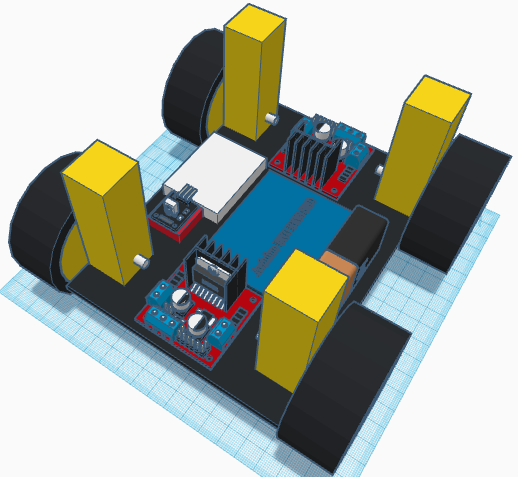
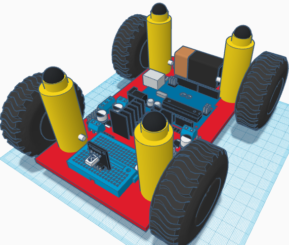

For our parts we decided on the following: An Arduino UNO REV3 SMD, a 6-pack of mini-breadboards,
an infrared controller with a receiver, a 9-volt battery, a jack connector for it, and this set: 4 wheels,
4 motors, 2 motor drives, and 40 of each type of wire - in-in, in-out, out-out. It's all about $65-$67
depending on how much 3d printer filament we end up using. However, we already have some of the stuff. So
the cost of the things we don't have is $55.21, not too bad for a $100 budget. We learned how to do a
proper research report (which was 5 pages of my life that I am never getting back) and search things up.
Document
Later, we had to add to our research because it aparently wasn't enough. However, because we researched
more, we found out that we didn't even need bluetooth, we could just use infrared to send and read signals.
This was all possible due to IRremote, a library for Arduino that reads infrared signals and decodes them.
This is possible because the remote we were going to use comes with an IR receiver. However, we did need to
get a mini-breadboard for it. On Wednesday and Friday, we were designing our projects in TinkerCAD. Jonah
and I had slightly different designs, but both could still work. Apparently, 1 motor controller could only
control 2 motors at a time, so we ended up using both included in the set.
My design for the car:

Jonah's design for the car:

When we got the materials, it wasn't what we wanted, but it would work. We had 2 motors, 2 wheels, a L293D
motor drive, a breadboard, and an Arduino UNO R3. So, we did what we could, and we found a website with clear instructions
in how to assemble the electronics for how to get the motor working.
Link. After that, we tried to connect the motors to the breadboard using wires and sauntering, and that
went terribly. One of our motors stopped working, but luckily Mr. Kim gave us a spare that did work. So now,
we have that motor working, but the other one is a but finnicky so we had to adjust it a bit.
Eventaully, we got the infrared remote working, and we found out what up, left, right, and down were on the remote.
We also put OK as stop, so everything was set. Jonah got the LEGO wheels, and everything SHOULD have worked, but nope.
Apparently Jonah did something wack with the infrared wiring, but that's fine, neither of us are familiar with it.
When we did the presentation in class, it didn't work. But then I went home and fixed it and it worked!!!
The car is a bit heavy so the wheels are slow or barely work. I cut out failed attempts for the infrared because the signal doesn't
go through all the time.